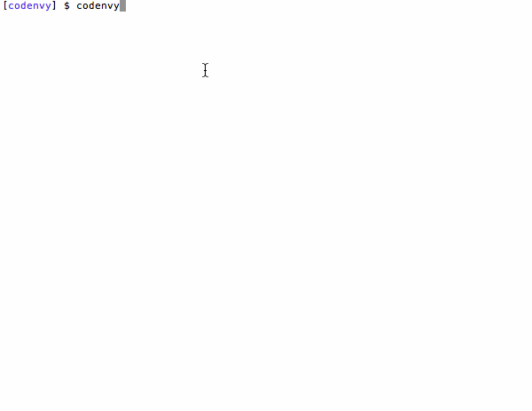

_ | | _ ___ ___ __| | ___ _ ____ ___ _ { (' ) } / __/ _ \ / _` |/ _ \ '_ \ \ / / | | | {{ (' ) }} | (_| (_) | (_| | __/ | | \ V /| |_| | { (__,__,__,_) } \___\___/ \__,_|\___|_| |_|\_/ \__, | __/ | |___/
Sync your existing remote Codenvy projects to your local environment, or:
Create a new developer environment locally, and send it to Codenvy. After sending it to Codenvy, you can sync it back to your local directory.
Once a project is loaded within Codenvy’s servers, it can be modified, cloned, shared, restricted, and scaled.
Let’s have some fun.
Create a directory for a project and login to Codenvy.
$ mkdir cdec $ cd cdec $ codenvy login tyler@codenvy.com my_password
This will create an active session between you and a remote Codenvy cloud. By default, the CLI connects to the remote hosted at codenvy.com. Codenvy can be installed on premises or in multiple public clouds. You can use the ‘codenvy remote’ command to see the list of remotes or configure additional ones. The ‘login --remote’ option can be used to access different systems simultaneously.
Present a list of the projects that you have membership rights to.
$ codenvy list
ID REMOTE WORKSPACE PROJECT BUILDERS RUNNERS p23ea3f default florent java-console none none pdc3dac default florent maven-example none none p1fdcfa default florent seed none none p133aff default florent yo none none
If this is your first time using Codenvy, you are a member of a single workspace that belongs to your account. You can also be a member of other workspaces if the administrators of those workspaces invite you. Let’s get some historical details on this project. Each project has a unique hash identifier that can be used as a reference in other commands.
$ codenvy info p23ea3f
ID p23ea3f WORKSPACE florent PROJECT java-console IDE URL http://ide3.cf.codenvy-stg.com/ide/florent/java-console RUNNERS none BUILDERS none
You can either input the entire code, or just the initial three letters (as a shortcut).
$ codenvy info p23
ID p23ea3f WORKSPACE florent PROJECT java-console IDE URL http://ide3.cf.codenvy-stg.com/ide/florent/java-console RUNNERS none BUILDERS none
This project is hosted in a developer environment that is hosted at Codenvy. Within this environment is the project, trype structure, code, builder (for dependency analysis, compiling, unit tests, and packaging), runner (for executing the application and debugging), and plugins, such as the SCM client like subversion. The CLI can interact with the remote developer environment:
$ codenvy build p23
Build task for project java-console' has been submitted with builder ID b52686a ID b52686a WORKSPACE florent PROJECT java-console ARTIFACT N/A STATUS IN_QUEUE
This places a request at the remote to build project referenced by hash p23. Your request is queued at Codency and processed with the first available elf (slave).
$ codenvy build p23 $ codenvy logs b52
[INFO] Scanning for projects... [INFO] [INFO] ------------------------------------------------------------------------ [INFO] Building hello-app 1.0-SNAPSHOT [INFO] ------------------------------------------------------------------------ [INFO] [INFO] --- maven-clean-plugin:2.5:clean (default-clean) @ desktop-console-java --- [INFO] [INFO] --- maven-resources-plugin:2.6:resources (default-resources) @ desktop-console-java --- ... ... ... [INFO] ------------------------------------------------------------------------ [INFO] BUILD SUCCESS [INFO] ------------------------------------------------------------------------ [INFO] Total time: 3.164s [INFO] Finished at: Sun Aug 03 09:06:10 UTC 2014 [INFO] Final Memory: 16M/161M [INFO] ------------------------------------------------------------------------
The CLI is defaulted to execute in the foreground, but can be sent to the background using ‘codenvy build -bg’. Sending commands to the background can be beneficial since you can launch multiple builder and runner processes simultaneously. If you have executed a process in the background, the ‘codenvy logs’ command retrieves the output of the process.
Let’s execute your application in a remote Codenvy runner.
codenvy run p23 codenvy list codenvy info b52
In this case, when you do a run, Codenvy creates a runner which is another process. This new process can be short- or long-lived depending upon how your account is configured. Each runner gets its own runner ID, and it is possible for you to launch as many runners as you desire as long as your account’s RAM has not exceeded its quota. You can use the ‘codenvy info’ command with project, builder or runner IDs. If you need to stop your application, you can use the runner ID as a parameter. Let’s stop the runner that we started, run a new one, and then launch the browser to visit the application’s user interface.
$ codenvy stop p23 $ codenvy run $ codenvy open r34
Pull a copy of the project from Codenvy.
codenvy pull p23
Pulling project java-console into /Users/benoitf/clone/java-console Pulling...done !
Now, open your favorite IDE, make an edit and perform any kind of local build or run. Save your changes. You can make these changes whether you are online or offline.
$ codenvy push
This will push your changes back to Codenvy. Codenvy supports a last-write wins policy. This allows for a direct push / pull connection to Codenvy. For projects where there are multiple users accessing the same project, you can also use your source code repository with a hosted provider like BitBucket or GitHub. From within Codenvy, you can have your project be mapped to a local clone of a remote respository, and then use the clone within the remote Codenvy environment or on your local machine. We are working on an operational transforms system that will allow your local directory to act as a direct sync point with the remote environment, so that as changes are made locally, they are instantly pushed back into the remote space. This will ship later in 2014.
Now, let’s open up Codenvy to see the changes made on the remote project.
$ codenvy open p23
URL 'http://ide3.cf.codenvy-stg.com/ide/florent/java-console' has been opened in the web browser
Codenvy also comes with a browser IDE of its own that gives you a full range of developer functions right in your browser. This command opens the environment instantly without you having to install or download any software.
There are two ways to create a project that is pushed to Codenvy. You can create your project files locally and then push them to Codenvy where a new project is created. Or, you can create a Codenvy configuration file, ‘project.json’ which describes a developer environment, and create a new Codenvy project remotely form that configuration file.
Let’s start by creating a project from local files that we touch. Create a new directory for a project, and create some source files for your project.
$ mkdir local_project $ cd local_project $ touch some_files
Create a remote project that will contain your local files. The [create_project] command will look locally for a .\codenvy\project.json configuration file with instructions on how to create the project remotely. If a configuration file does not exist, it will create a blank project type at Codenvy. We’ll push our local files into the new project, check the status, and then pull them back down to create a local synchronization point (also pulling in the full Codenvy configuration file).
codenvy build <project-id>
Build a project
codenvy info <project-id> codenvy info <runner-id> codenvy info <builder-id>
Display information for a project, runner, or builder
codenvy list
List workspaces, projects and processes
codenvy login <user> <pass>
Login to a remote Codenvy cloud
codenvy logs <builder-id> codenvy stop <runner-id>
Display output logs for a runner or builder
codenvy pull [project-id] [directory]
Pull a project
codenvy push [directory]
Push a project
codenvy remote add <remote-name> <url> codenvy remove <remote-name>
Adds or removes a Codenvy cloud configuration to your CLI storage. This can referenced in other calls. You can have multiple Codenvy cloud installations configured.
codenvy run <project-id>
Run a project
codenvy stop <project-id> codenvy stop <runner-id>
Stop one or more runner processes
Codenvy CLI assembly is available in tar or zip format.